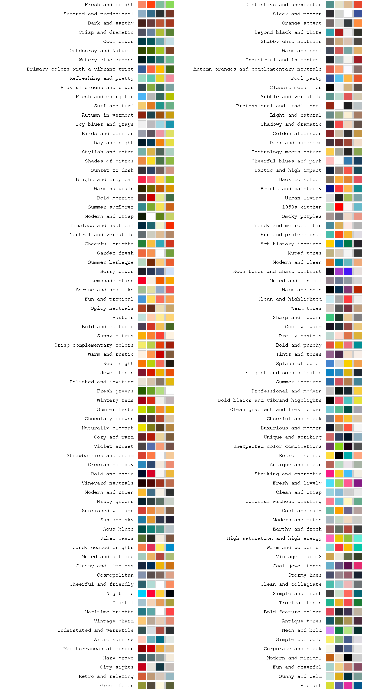
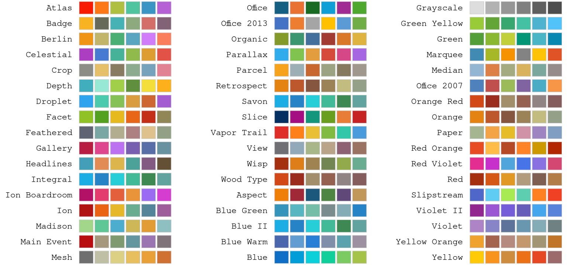

Every color palette shipped with ggthemes is shown below. Each row is
one palette, labeled with the call that returns it; the swatches are in
the order the palette function returns them. The gallery is built from
the package data, so new palettes and color changes appear here
automatically. The Tableau diverging and sequential rows show the color
stops used by scale_colour_gradient2_tableau() and
scale_colour_gradient_tableau().
Canva
Each label is the palette argument of
canva_pal(), for example
canva_pal("Fresh and bright").

Excel
Each label below is the theme argument of
excel_new_pal(), for example
excel_new_pal("Atlas").
